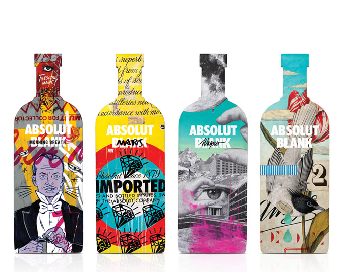

홈 > 브랜드 매거진 > 앱솔루트
앱솔루트
앱솔루트는 보드카 병 하나를 광고와 예술의 반복 가능한 캔버스로 만든 브랜드다. 제품 형태의 일관성을 유지하면서도 캠페인마다 다른 문화적 해석을 입혀, 단순한 병을 강력한 시각 기호로 만들었다.
산업 분야 식음료 · 공개 등급 매거진 완성 · 브랜드 평가 5 ★


한눈에 보는 브랜드
앱솔루트는 보드카 병 하나를 광고와 예술의 반복 가능한 캔버스로 만든 브랜드다. 제품 형태의 일관성을 유지하면서도 캠페인마다 다른 문화적 해석을 입혀, 단순한 병을 강력한 시각 기호로 만들었다.
브랜드 관점
앱솔루트는 보드카 병 하나를 광고와 예술의 반복 가능한 캔버스로 만든 브랜드다. 제품 형태의 일관성을 유지하면서도 캠페인마다 다른 문화적 해석을 입혀, 단순한 병을 강력한 시각 기호로 만들었다.
시작과 성장
앱솔루트는 1879년 스웨덴 출신의 라르 올슨 스미스가 창립한 보드카 브랜드이다. 앱솔루트는 일관된 보드카 제조 방식과 차별화된 마케팅 전략을 기반으로 당시 보드카로 압도적이었던 러시아 시장을 제쳤다.
또한, 앱솔루트 퍼펙션(Absolut Perfection) 광고를 시작으로 제품과 예술을 접목한 아트 마케팅으로 화제를 모으며 세계적인 보드카 브랜드로 성장했다.
브랜드 아이덴티티
앱솔루트의 철학은 원 소스(One Source)에서 시작된다. 스웨덴 아후스(Ahus) 지역에서만 생산하는 재료를 이용하여 보드카를 만들고 있으며 맛과 품질에 있어서 어떠한 타협도 허용하지 않는다.
또한, 일관된 철학을 기반으로 혁신적인 패키지를 선보이는 앱솔루트는 매년 리미티드 에디션을 출시할 때마다 화제를 모으고 있다.
제품과 서비스
Absolut Vodka, Magerquark 0,3%
현재 상태
타임라인
BI/CI 변천사
함께 읽을 브랜드
맥도날드는 가장 평범한 소비재를 세계 어디서나 읽히는 대중문화의 기호로 바꾼 브랜드다. 햄버거와 감자튀김은 단순한 메뉴지만, 맥도날드는 속도, 표준화, 접근성, 익숙...
버거킹는 미국의 식음료 브랜드로, 맛, 메뉴 구성, 패키지, 매장 또는 유통 채널이 함께 브랜드 경험을 만드는 영역입니다.
아베
아베;뉴
식음료 · 자료 기반아베;뉴아베;뉴는 식음료 브랜드로, 맛, 메뉴 구성, 패키지, 매장 또는 유통 채널이 함께 브랜드 경험을 만드는 영역입니다.
An
Angelika Köhlermann
식음료 · 자료 기반Angelika KöhlermannAngelika Köhlermann는 오스트리아의 식음료 브랜드로, 맛, 메뉴 구성, 패키지, 매장 또는 유통 채널이 함께 브랜드 경험을 만드는 영역입니다.
네슬레(Nestlé)는 스위스 브베에 본사를 둔 세계 최대 규모의 식음료 다국적 기업이다.
 식음료 · 자료 기반무학
식음료 · 자료 기반무학무학(Muhak)은 경남 지역을 기반으로 저도주 '좋은데이'를 생산하는 한국의 소주 제조 기업이다.
 식음료 · 편집 검수말보로
식음료 · 편집 검수말보로말보로(Marlboro)는 필립 모리스가 1924년 도입한 미국의 담배 브랜드이다.
 식음료 · 편집 검수켈로그
식음료 · 편집 검수켈로그켈로그(Kellogg's)는 윌 키스 켈로그가 1906년 설립한 미국의 아침식사 시리얼 브랜드이다.